Redes Computacionales
Historia de RED
En realidad, la historia de la red se puede remontar al principio del siglo XIX. El primer intento de establecer una red amplia estable de comunicaciones, que abarcara al menos un territorio nacional, se produjo en Suecia y Francia a principios del siglo XIX. Estos primeros sistemas se denominaban de telégrafo óptico y consistian en torres, similares a los molinos, con una serie de brazos o bien persianas. Estos brazos o persianas codificaban la informacion por sus distintas posiciones. Estas redes permanecieron hasta mediados del siglo XIX, cuando fueron sustituidas por el telégrafo. Cada torre, evidentemente, debia de estar a distancia visual de las siguientes; cada torre repetía la información hasta llegar a su destino. Un sistema similar aparece, y tiene un protagonismo especial, en la novela Pavana, de Keith Roberts, una ucronía en la cual Inglaterra ha sido conquistada por la Armada Invencible.
Estos telégrafos ópticos fueron pioneros de algunas técnicas que luego se utilizaron en transmisiones digitales y analógicas: recuperación de errores, compresión de información y encriptación, por ejemplo. Se ha calculado que la velocidad efectiva de estos artilugios sería unos 0.5 bits por segundo, es decir, aproximadamente unos 20 caracteres por minuto.
Supongo que los métodos de seniales de humo utilizados por los indios también se podrían considerar algo así, con la diferencia de que no consistían en un establecimiento permanente, y que además no funcionaba a nivel nacional.
Posteriormente, la red telegráfica y la red telefónica fueron los principales medios de transmisión de datos a nivel mundial.
Definición
Una red de computadoras (tambiém llamadado red de ordenadores o red informática) es un conjunto de equipos (computadoras y dispositivos), conectados por medio de calbes, señales, ondas o cualquier otro método de transporte de datos, para compartir información (archivos), recursos (discos, impresoras, programas, etc.) y servicio (acceso a una base de datos, internet, correo electrónico, chat, juegos, etc.). A cada una de las computadoras conectadas a la red se le denomina un nodo.
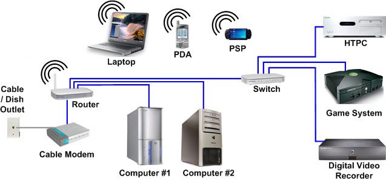Clasificación
Segun su cobertura
PAN(red de area personal)
Es una red de ordenadores usada para la comunicación entre los dispositivos de la computadora (teléfonos incluyendo las ayudantes digitales personales) cerca de una persona. El alcance de una PAN es de algunos metros. Se pueden conectar con cables a los USB y FireWire de la computadora. Una red personal sin hilos del área (WPAN) se puede también hacer posible con tecnologías de red tales como IrDA y Bluetooh.
LAN (red de área local)
Una red que se limita a un área tal como un cuarto, un solo edificio o una nave. Una LAN grande se divide generalmente en segmentos lógicos más pequeños llamados grupos de trabajo.
MAN (red de área metropolitana)
Una red que conecta las redes de dos o más locales pero no se extiende más allá de los límites de una ciudad.
WAN (red de área mundial)
Es una red que cubre un área geográfica amplia y en gran parte de su estructuraa utiliza instalaciones de transmisión telefónicas.
Segun su topologia
La topología o forma lógica de una red se define como la forma de tender el cable a estaciones de trabajo individuales.Estrella
La red se une en un único punto; un concentrador de cableado o HUB que a través de él los bloques de información son dirigidos hacia las estaciones. Su ventaja es que el concentrador monitorea el tráfico y evita las colisiones y una conexión interrumpida no afecta al resto de la red. La desventaja es que los mensajes son enviados a todas las estaciones, aunque vaya dirigido a una.
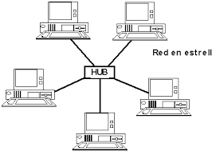Anillo
Las estaciones están unidad unas con otras formando un círculo por medio de un cable común. Las señales circulan en un solo sentido alrededor del círculo, regenerándose en cada nodo. Cada nodo examina la información que es enviada a través del anillo, si no está dirigida a él la pasa al siguiente nodo. La desventaja es que si se rompe una conexión, se cae la red completa.
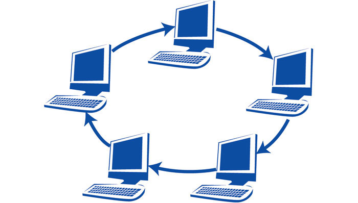Bus
Las estaciones están conectadas por un único segmento de cable. A diferencia del anillo, el bus es pasivo, no se produce regeneración de las señales en cada nodo. Los nodos en una red de bus transmiten la información y esperan que ésta no vaya a chocar con otra información transmitida por otro de los nodos. Si esto ocurre, cada nodo espera una pequeña cnatidad de tiempo al azar, después intenta retransmitir la información.
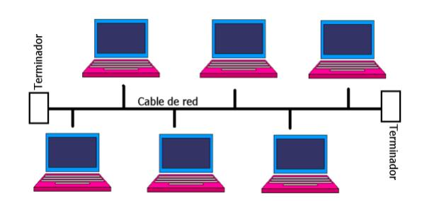Jerárquicas
Los nodos están colocados en forma de árbol. Es parecia a una seri de redes en estrella interconectadas, con la diferencia que no tiene un nodo central sino un nodo de enlace troncal, generalmente ocupado por un hub o switch, desde el que se ramifican los demás nodos. Es una variación de la red en bus, la falla de un nodo no implica interrupción en las comunicaciones porque se comparte el mismo canal de comunicaciones.

Hibridas
El bus, la estrella y el anillo se combinan algunas veces para formar redes híbridas.
Anillo en estrella: se utiliza con el fin de facilitar la administración de la red. Físicamente, la red es una estrella centralizada en un concentraor, mientras que a nivel lógico, la red es un anillo.
Bus en estrella: el fin es igual a la topología anterior.
Según su relación funcional
Cliente-Servidor
En este caso el servidor es una máquina específica que usa un sistema opertaivo desarrollado especialmente para este dipo de red. Las estaciones de trabajo comparten recursos disponibles a partir de este servidor. La ejecución de las tareas está dividida entre el cliente (o estación) y el servidor. Este tiop de red proporciona un mejor rendimiento y niveles de seguridad más adecuados para el trabajo profesional en red.
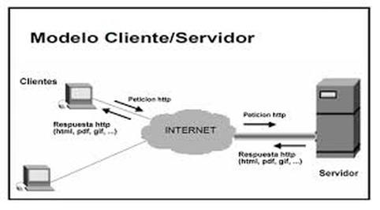Par a Par
Punto a Punto (P2P) es un tipo de red donde todos los equipos conectados pueden desempeñar el papel de servidor y de estación de trabajo conectados pueden desempeñar el papel de servidor y de estación de trabajo al mismo tiempo. En este caso, si alguien quisiera compartir un recurso podria ofrecerlo a los demás. Este es un tipo de red para trabajos simples, donde el volumen de información intercabiado es pequeño y la seguridad no es un factor crítico.
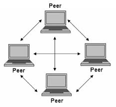Componentes Básicos
Placa e red
La placa de red permite la conexíon con otras computadoras utilizando un cable. Alcanza gran velocidad de transmisión.
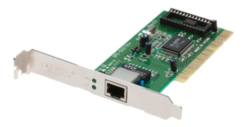Modem
Cuando la PC se conecta por medio de la línea telefónica.
Par trenzado
Sus alambres conductores están enrollados, logra mayor inmunidad al ruido electromagnético. Velocidad de hasta 1Mbps a aproximadamente de 100 metros. Es similar a los que conectan los aparatod telefónicos. Ejemplo: STP y UDP(se utiliza en redes de computadoras en topología de estrella).
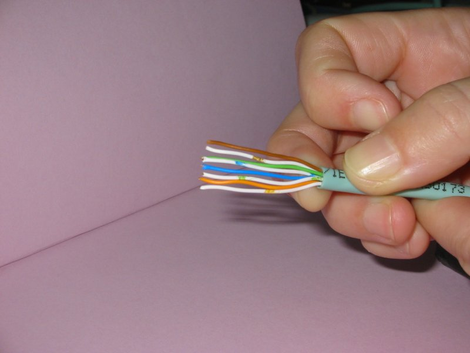Coaxial
Similar al utlizado para la TV por cable. Transmite información a 10Mbps sobre distancias de casi 600 metros. Ej: RG58 o banda base (utlizado en redes LAN de pequeña cobertura) y RG59 utilizado para señales de telvisión).
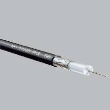Fibra óptica
En lugar de usar señales eléctricas para transmitir la información usa señales de luz, solucionando el problema de ruido. Ofrecen un ancho de banda mucho mayor, por eso transmite a velocidades de cientos de Mbps.
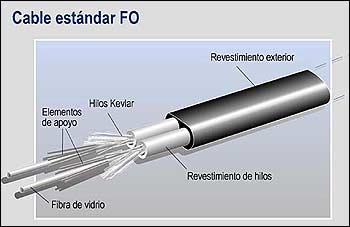Transmisiones inalámbricas
Subred de comunicación con cobertura geográfica limitada, cuyo medio físico de comunicación es el aire. No pretende reemplazar una red cableada, sólo la complementa en situaciones donde es difícil realizar una conexión o para alcanzar grandes distancias.
Presenta la desventaja de cobertura y velocidad limitada y es una tecnología relativamente nueva. Este tipo de comunicación es hecah por compañias especializadas que además suministran los equipos como antenas, codificadores, etc.
Aplicación
Para expandir una red, movilidad de equipos, crear una nueva red, instalación de red en áreas poco accesibles para cablear, colocación de LAN temporal, enlace entre edificios, etc.
Ejemplo:
Radio, Infrarrojos, Microondas, BlueTooh, Satelital.
Equipos de Conexión
Dependiendo de la cantidad de equipos existentes, de la distancia física entre ellos y del tipo de red elegida, puede ser indispensable la adquisición de equipos electrónicos que sirven para una comunicación eficiente y confiable.
Hubs o Concentradores
Son equipos que permiten estructurar el cableado de las redes. El hub da conectividad pero lo que entra por una boca se repite por todas y son las terminales las que tienen que tienen que rechazar lo que no es para ellas. Ejemplo se usar para unir los brazos de una red estrela, siendo su núcleo.

Switch
Es parecido al hub pero lo que entra por una boca solo sale por la que tiene conectada la terminal destino haciendo que la red tenga menos trafico, se dice que es un hub inteligente porque sabe a quien enviar cada paquete.
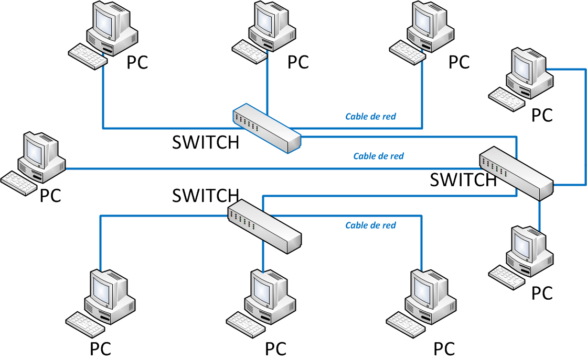Puentes (Bridges)
Puede unir segmentos o grupos de trabajo LAN, pero puede dividir una red para aislar el trafico o los problemas.
Enrutadores (routers)
Conecta redes o segmentos red con distintos protocolos y arquitecturas. El bridge podría resultar inadecuado para asegurar una comunicación rápida entre todos los segmentos. Una red de esta complejidad necesita un dispositivo que no sólo conozca la direcciones de cada segmento, sino también, que sea capaz de determinar el camino más rápido para el envío de datos y filtrado del tráfico de difusión en el segmento local.
Repetidores (repeaters)
Amplían la longitud de la red uniendo dos segmentos y amplificando la señal, pero junto con ella amplican también el ruido. La red sigue siendo una sola, con lo cual, siguen siendo válidas las limitaciones en cuanto al número de estaciones que pueden compartir el medio.
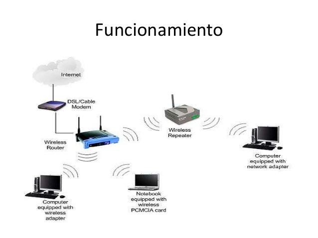Pasarelas (Gateways)
Son equipos para interconectar redes con protocolos y arquitecturas completamente diferentes a todos los niveles de comunicación, al igual que un router, pero se lo emplea como puerta de salida de una red a otra más grande (digamos...internet)
Contacto
Nombre: Gramajo Emmanuel Damian
Email: emanueldg77@gmail.com
Materia: Practica Profesionalizante 2
Profesora: Veronica Modad
Curso: 2
Año: 2017